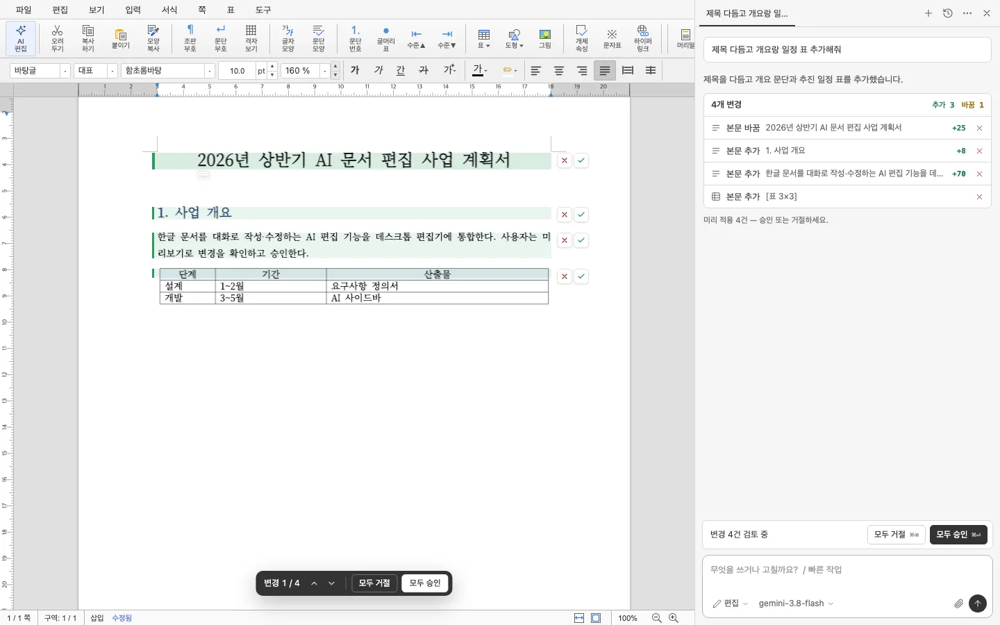

말로 쓰고 고치기
본문·표·서식을 HWP 구조 그대로 고칩니다. 선택한 부분만 다듬거나, 입력창에 /를 눌러 자주 쓰는 작업을 바로 꺼냅니다.
- "표의 합계 행 추가해줘"
- "이 문단 더 격식 있게"
- "쪽 번호를 가운데 아래에"
- "맞춤법만 교정해줘"
- "예산 표를 차트로"
무료 · 오픈소스 · HWP/HWPX
HOP AI는 HWP 편집기에 AI 글쓰기 도우미를 붙인 데스크톱 앱입니다. 사업계획서 초안부터 표·서식 수정까지 지시하면 문서에 바로 쓰고, 바뀐 곳은 문서 위에서 확인한 뒤 승인합니다.
Claude·GPT·Gemini API 키, 로컬 Ollama, 또는 Claude Code 구독으로 동작합니다.
무엇을 하나요
본문·표·서식을 HWP 구조 그대로 고칩니다. 선택한 부분만 다듬거나, 입력창에 /를 눌러 자주 쓰는 작업을 바로 꺼냅니다.
바뀐 문단이 초록으로 표시되고, 변경마다 승인하거나 거절합니다.
기존 사업비는 5억 2,500만 원이다.
총사업비는 10억 원으로 증액한다.✕✓
⌘⏎ 모두 승인 · ⌘⌫ 모두 거절
15쪽 사업계획서도 개요부터 만들고 절마다 나눠 써서, 중간에 끊겨 잃지 않습니다.
공문·보고서·사업계획서 — 요청을 읽고 맞는 작성 지침을 AI가 고릅니다. 고를 필요가 없습니다.
✦ 지침: 공문 · AI 선택
수신 · 제목 · 1. 가. 1) · 붙임 · 끝.
API 키로, 내 컴퓨터의 로컬 모델로, 또는 이미 쓰는 Claude Code 구독으로.
.hwp.hwpx.pdf
실제 화면

다운로드
최신 릴리스 파일로 연결됩니다.
macOS 12 이상
Windows 10 이상 · x64
한글 입력은 .deb·.rpm 권장
개발자 서명 없이 배포하는 앱이라 운영체제가 한 번 확인을 요청합니다. 원본 HOP와 이름이 달라 함께 설치해도 됩니다.
응용 프로그램 폴더로 옮긴 뒤 시스템 설정 → 개인정보 보호 및 보안에서 그래도 열기를 누르세요. "손상되었기 때문에 열 수 없습니다"가 뜨면 터미널에서 아래를 한 번 실행하세요.
xattr -dr com.apple.quarantine "/Applications/HOP AI.app"
"Windows의 PC 보호" 창이 뜨면 추가 정보 → 실행을 누르세요. Edge에서 "일반적으로 다운로드되지 않습니다"가 보이면 다운로드 항목의 … 메뉴에서 유지를 고르세요.